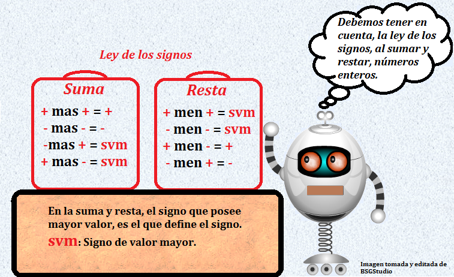

Cuando realizamos operaciones con números enteros, lo primero que debemos tener en cuenta, es el signo que acompaña el número que se vaya a operar y tener presente la ley de los signos.

Suma: Para determinar la suma de dos números enteros, debe prestarse atención a sus signos, según lo siguiente:
- Si ambos son positivos o uno de los dos es cero, simplemente se deben sumar sus valores absolutos y se conserva el signo positivo. Por ejemplo: 1 + 3 = 4.
- Si ambos signos son negativos o uno de los dos es cero, simplemente se deben sumar sus valores absolutos y se conserva el signo negativo. Por ejemplo: -1 + -1 = -2.
- Si tienen signos diferentes, en cambio, deberá restarse el valor absoluto del menor al del mayor, y se conservará en el resultado el signo del mayor. Por ejemplo: -4 + 5 = 1.
Resta: La resta de números enteros atiende también al signo, dependiendo de cuál sea mayor y cuál menor en cuanto a valor absoluto, obedeciendo a la regla de que dos signos iguales juntos se convierten en el contrario:
- Resta de dos números positivos con resultado positivo: 10 – 5 = 5
- Resta de dos números positivos con resultado negativo: 5 – 10 = -5
- Resta de dos números negativos con resultado negativo: (-5) – (-2) = (-5) + 2 = -3
- Resta de dos números negativos con resultado positivo: (-2) – (-3) = (-2) + 3 = 1
- Resta de dos números de distinto signo y resultado negativo: (-7) – (+6) = -13
- Resta de dos números de distinto signo y resultado positivo: (2) – (-3) = 5.
Aprendamos jugando